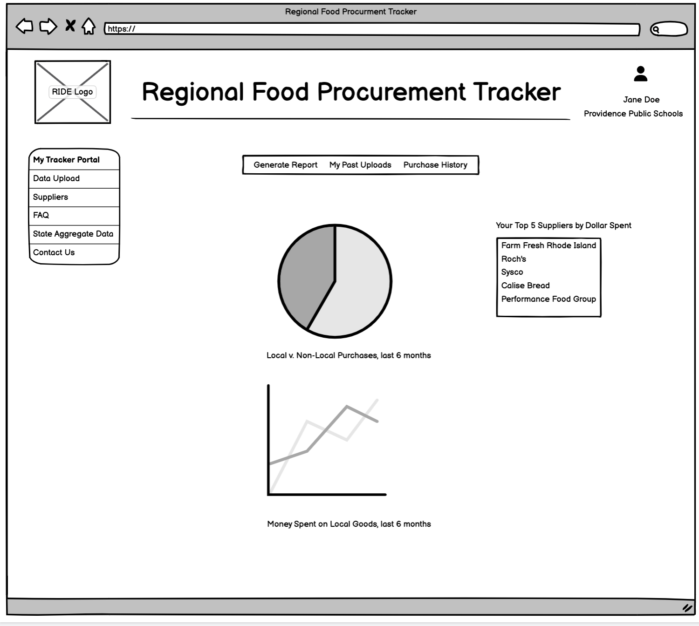
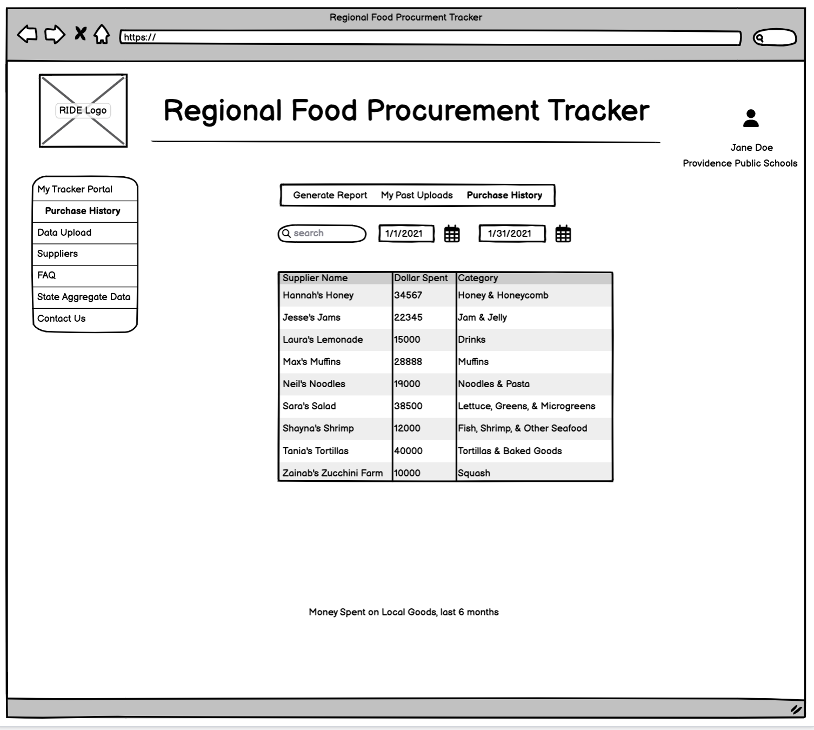

Wireframe
Introduction to Wireframes
A wireframe is a visual representation of a user interface, created with the primary goal of outlining its structure, layout, and content organization. It serves as a simplified, low-fidelity blueprint, enabling designers, developers, and stakeholders to focus on the essential elements and arrangement of a digital project, without the distractions of colors, graphics, or intricate details.
We have provided a wireframe for you to get a sense of what the food tracking platform will look like, the functions it will perform, and how you as a user can interact.
Homepage
Users will be able to log into their account, associated with one or multiple facilities for which they are responsible. For example, a school food administrator (SFA) will likely have one facility attached to their account, while a state level administrator will be able to view any number of facilities that fall under their responsibility.

State Level Data Display
Members of the public will be able to see non-sensitive data aggregated at a state level; no user account is required to view this data.

Individual Level Data Display
An individual user will be able to view data associated with their facility, such as the amount of local vs non-local food purchased over the last 6 months. The initial metrics to be displayed have not been finalized.

Velocity Report Upload
The application collects data through user-uploaded velocity reports, representing a history of their purchases over a specific time period. The application will automatically parse velocity reports, standardize the units and item types, save both the original and standardized velocity report, and include the resulting data in the facility's records. Facility records are aggregated to provide state level insight and oversight.
Purchase History
After uploading velocity reports, users will be able to review their purchase history by item type, item category, and distributor/supplier.

Suppliers
As the application gathers data it will generate a dynamically updated list of suppliers. This list aims to encourage users to purchase from suppliers that are able to source products locally.